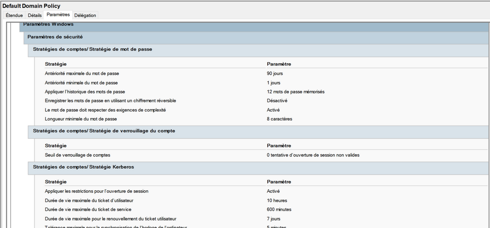
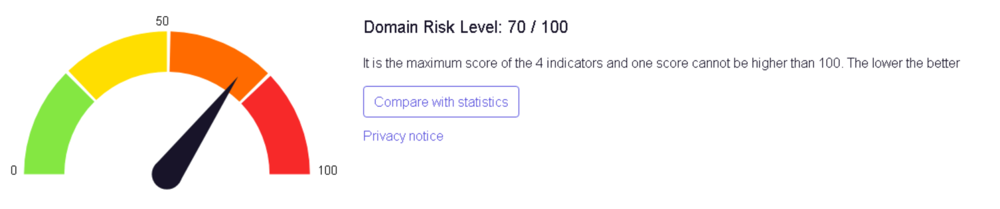
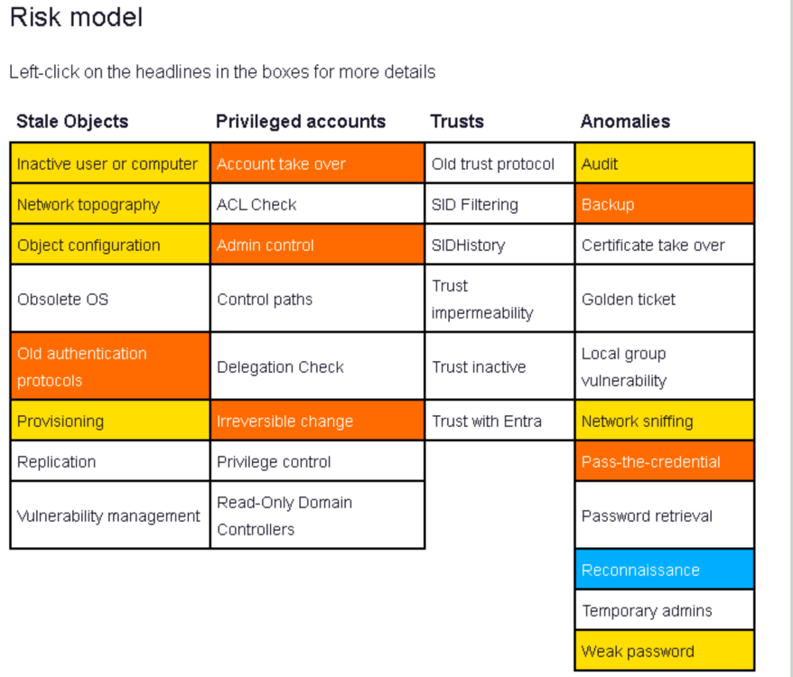
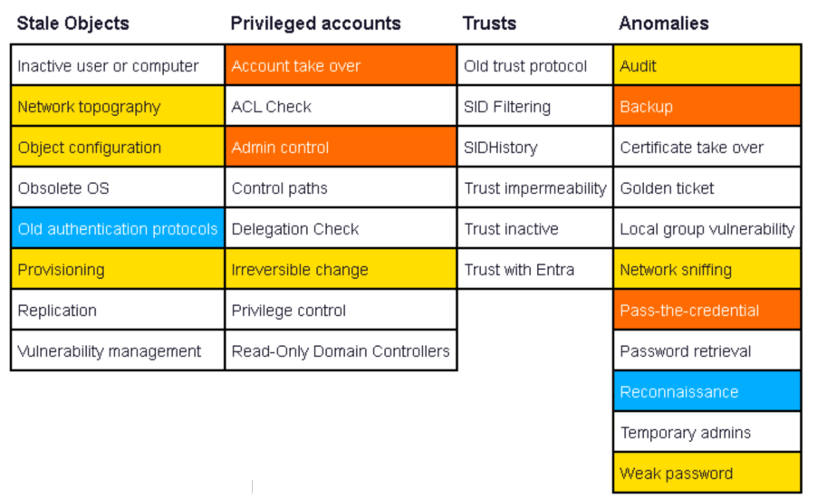
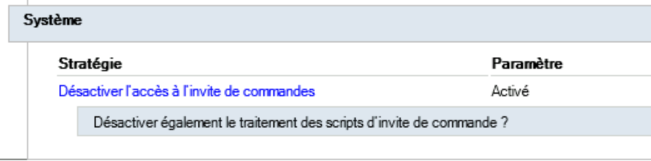
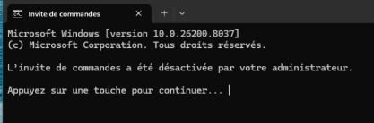
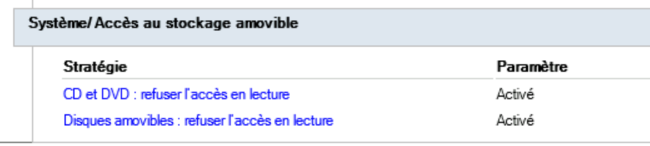
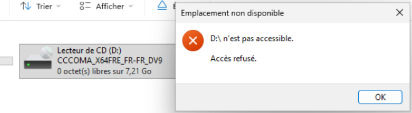
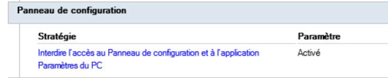
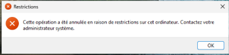

Domaine de laboratoire constant.local · PingCastle, BloodHound, stratégies de groupe · mars 2026
Objectif
Mesurer le niveau de risque d'un domaine Active Directory, corriger une partie des points relevés,
puis appliquer des GPO de restriction sur les postes et vérifier leur effet.
Outils
PingCastle (score de risque), BloodHound depuis Exegol (chemins d'attaque), console de gestion des stratégies de groupe.
Environnement
Un contrôleur de domaine Windows Server, un poste Windows 11 joint au domaine.
1. Politique de mots de passe

Default Domain Policy : stratégie de mot de passe et de verrouillage relevée.
Paramètre
Valeur relevée
Recommandation ANSSI
Longueur minimale
8 caractères
12 caractères minimum avec complexité (plus pour les comptes à privilèges)
Complexité
Activée
Activée
Historique
12 mots de passe
Conforme
Seuil de verrouillage
0 (jamais)
Verrouiller après quelques échecs pour freiner la force brute
2. Score PingCastle

Audit initial : niveau de risque du domaine de 70/100 (plus le score est bas, mieux c'est).
PingCastle classe ses contrôles en quatre familles. La couleur indique la gravité des points trouvés :
orange = élevée, jaune = moyenne, bleu = information, blanc = rien à signaler.

Matrice de risques, audit initial.

Matrice de risques après corrections.
Contrôle
Avant
Après
Inactive user or computer
moyen
rien à signaler
Old authentication protocols
élevé
information
Irreversible change
élevé
moyen
Restent à traiter : la prise de contrôle de comptes à privilèges (Account take over, Admin control),
la sauvegarde de l'annuaire (Backup) et l'exposition aux attaques de type Pass-the-credential.
BloodHound représente les relations de l'annuaire sous forme de graphe et met en évidence les raccourcis vers les droits d'administration. Deux relations ressortent :
GRP_TECHNICIENS est membre de Admins du domaine : tout compte technicien compromis donne le contrôle du domaine.
Il faut une délégation ciblée (réinitialisation de mots de passe, jonction de postes) plutôt que l'appartenance au groupe.
Utilisateurs du domaine a le droit CanRDP sur le serveur : n'importe quel compte peut ouvrir une session à distance sur le serveur.
Ce droit doit être limité à un groupe d'administration.
4. GPO de restriction sur les postes
Trois GPO utilisateur, liées à l'OU des utilisateurs standards. Pour chacune : le paramètre, puis la preuve sur le poste après gpupdate /force.
Désactiver l'invite de commandes
Configuration utilisateur → Modèles d'administration → Système → Désactiver l'accès à l'invite de commandes.


Sur le poste : « L'invite de commandes a été désactivée par votre administrateur ».
Bloquer le stockage amovible
Système → Accès au stockage amovible : refuser l'accès en lecture aux CD/DVD et aux disques amovibles.


Sur le poste : le lecteur amovible est visible mais l'accès est refusé.
Interdire le Panneau de configuration
Panneau de configuration → Interdire l'accès au Panneau de configuration et à l'application Paramètres du PC.


Sur le poste : « Cette opération a été annulée en raison de restrictions sur cet ordinateur ».
5. Recommandations
Passer la longueur minimale des mots de passe à 12 caractères et activer le verrouillage de compte.
Retirer GRP_TECHNICIENS de Admins du domaine et lui déléguer uniquement les tâches nécessaires sur les OU concernées.
Restreindre le droit d'ouverture de session Bureau à distance sur les serveurs à un groupe d'administration.
Mettre en place une sauvegarde régulière de l'annuaire (état du système des contrôleurs de domaine) et la tester.
Relancer PingCastle après chaque série de corrections pour suivre l'évolution du score.